P17 · Ворота финиша p17_finish.png
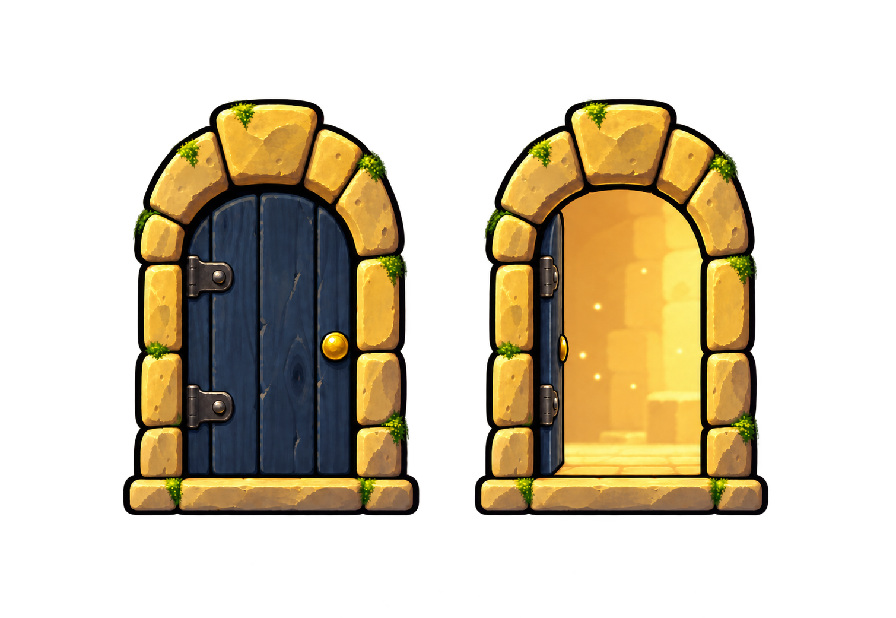
1510 × 1041 px · PNG RGBA
Компактная золотистая каменная арка. Закрытая тёмная деревянная дверь слева; открытая створка у косяка и тёплый свет справа. Одинаковые рамки для нарезки 500 × 702 px, общая линия порога y=868. Размер в игре — 102,4 × 140,8 px.
L21 w01_v2_lm21_rose_window.png
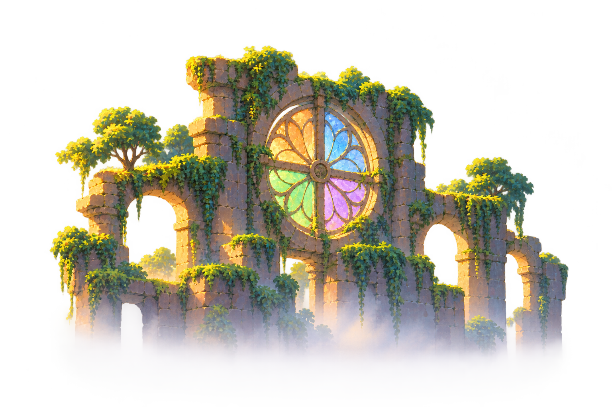
1536 × 1024 px · PNG RGBA
Четыре сектора витража: оранжевый, синий, зелёный, фиолетовый; основание в тумане.
L22 w01_v2_lm22_stone_press.png
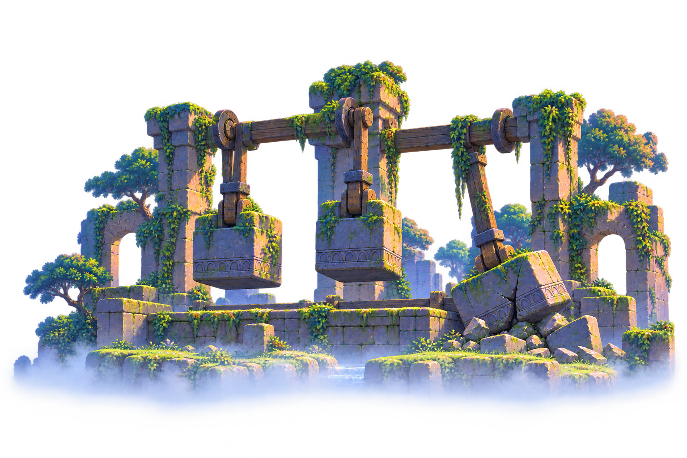
1536 × 1024 px · PNG RGBA
Три каменных молота: два подвешены, третий упал и разбит; прохладный свет святилища.
L23 w01_v2_lm23_landslide.png
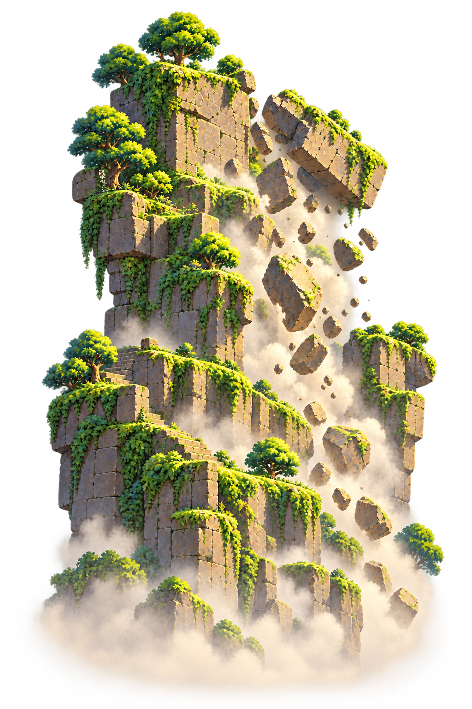
1024 × 1536 px · PNG RGBA
Сухая каменоломня: ступени, отрывающаяся плита, падающие камни и пыль. Лишние водопады удалены.
L24 w01_v2_lm24_buried_shrine.png
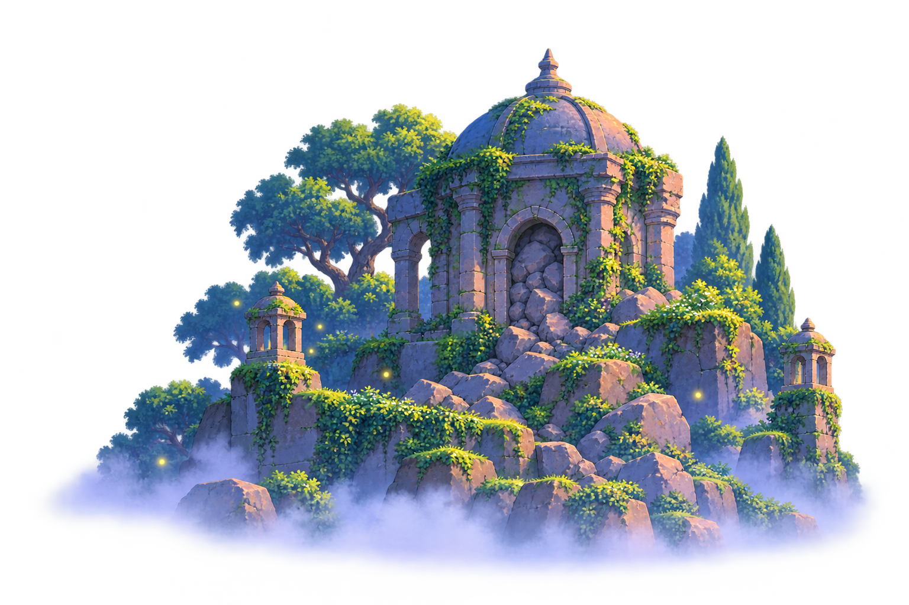
1536 × 1024 px · PNG RGBA
Купольная часовня с заваленным камнями входом, двумя каменными фонарями и светлячками.
L25 w01_v2_lm25_pass_towers.png
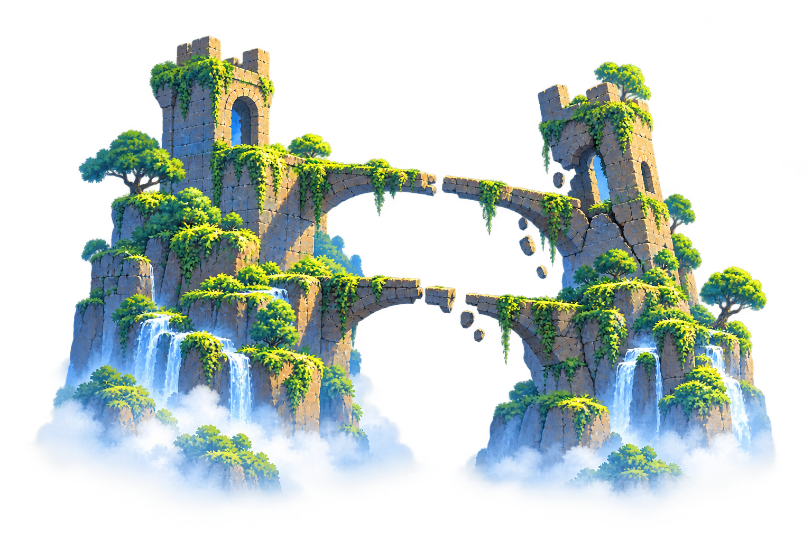
1536 × 1024 px · PNG RGBA
Две башни и два сломанных перехода; правая башня треснула, под ней падают камни.
P18 p18_rockfall.png
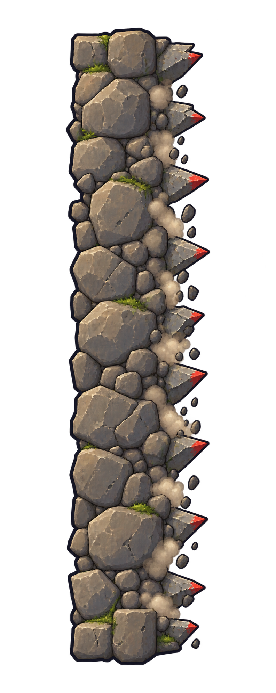
793 × 1983 px · PNG RGBA
Опасный передний край справа, каменные осколки с красными кончиками; середина в одном ритме для последующей нарезки.
P19 p19_hint_sign.png
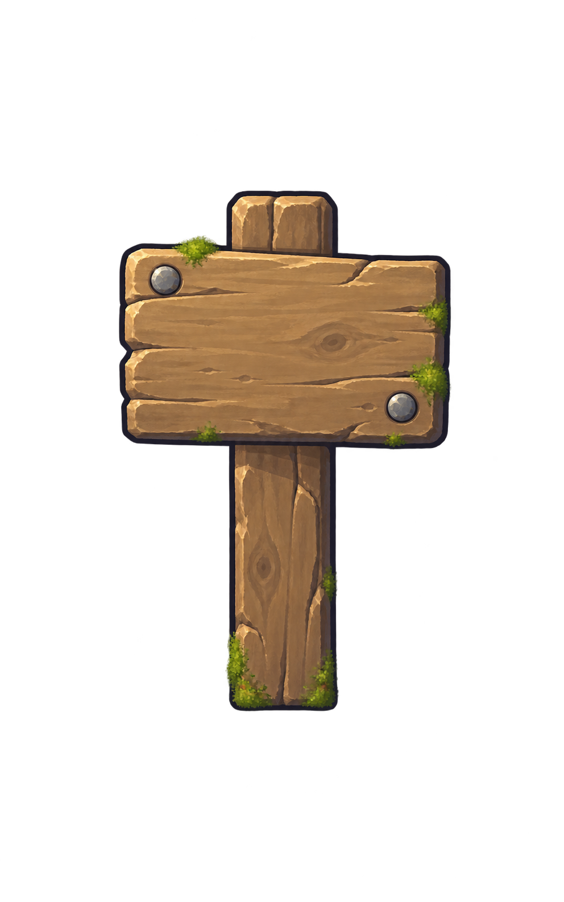
992 × 1586 px · PNG RGBA
Пустая светлая доска, короткий деревянный столб; знак вопроса добавляет игра.
P20 p20_spring_pad.png
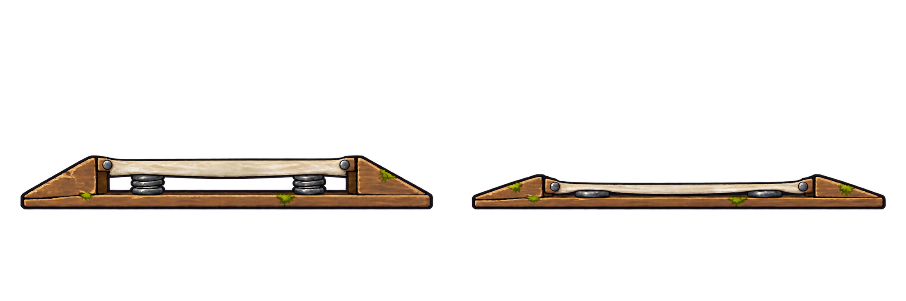
2172 × 724 px · PNG RGBA
Два низких состояния на общей линии основания. При ширине 160 px высота рисунка примерно 21,2 / 13,8 px; целевые размеры игры — 22,4 / 12,8 px. При подключении выставить эти размеры явно.
W2Z4 w02_mid_forge.png
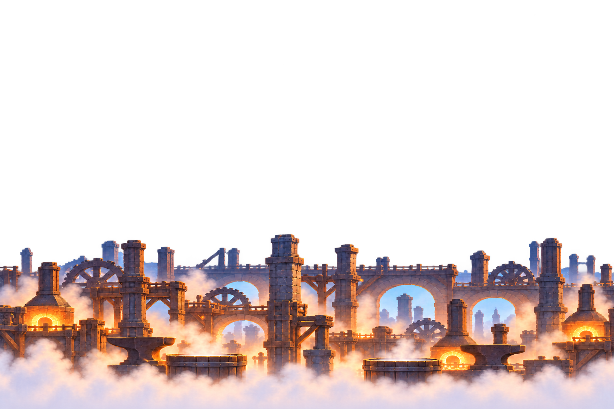
1536 × 1024 px · PNG RGBA
Две наковальни и две закалочные ванны; потоки заменены паром. Заметный рисунок начинается с y=586, ниже середины. В верхней половине невидимый остаток alpha ≤ 1/255.
W2Z8 w02_mid_machine.png
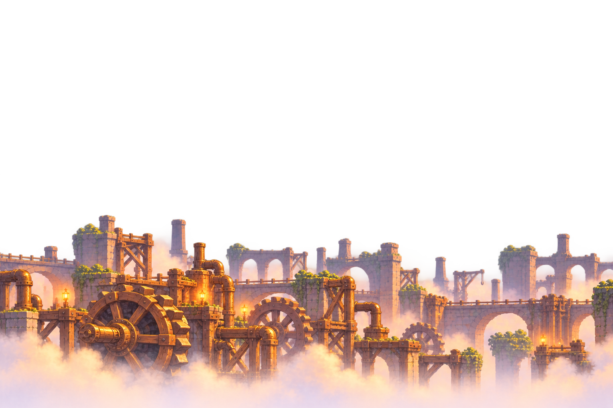
1536 × 1024 px · PNG RGBA
Вода и водяное колесо заменены зубчатыми шестернями, латунными трубами и механизмами. Заметный рисунок начинается с y=539. В верхней половине невидимый остаток alpha ≤ 1/255.
W2L01 w02_lm01_conveyor_gallery.png
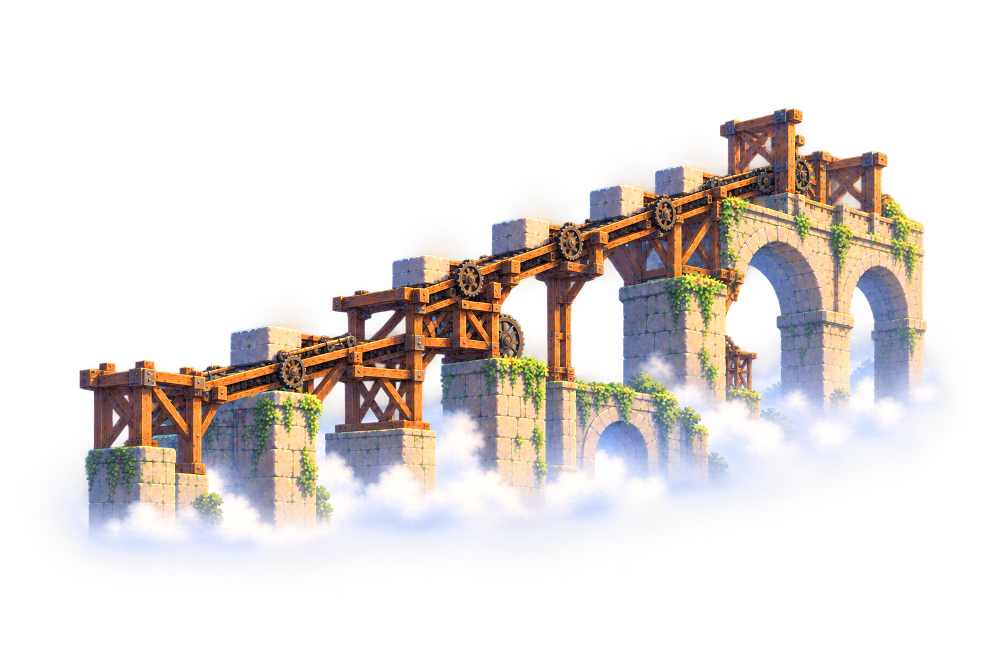
1536 × 1024 px · PNG RGBA
Галерея целиком внутри кадра; правый конец закончен каменной опорой, по краям прозрачное поле.